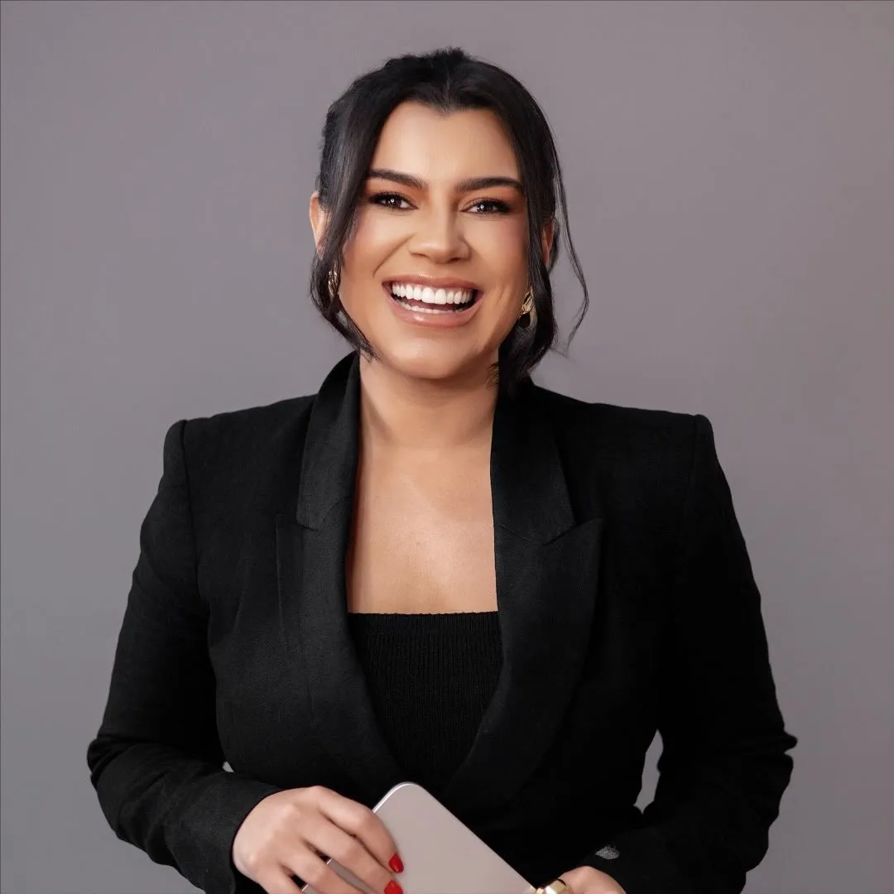
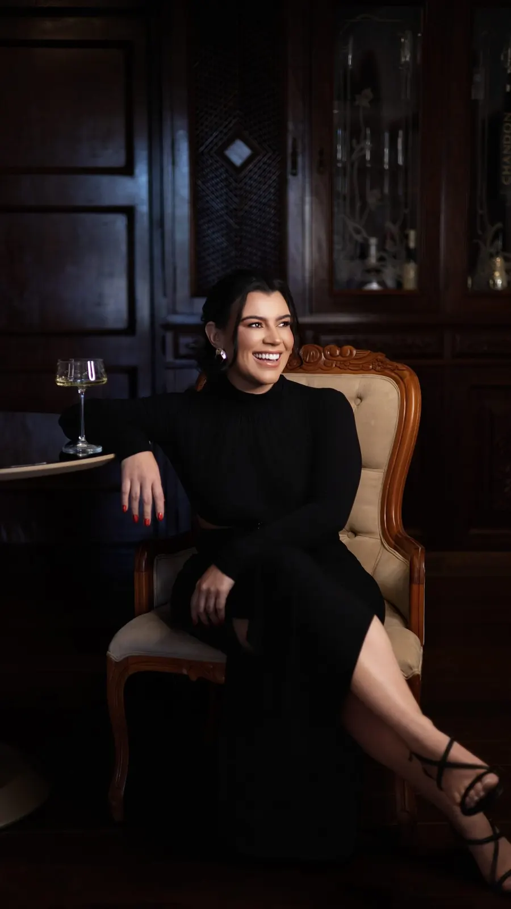

Odontologia em Alpinópolis · MG
Seu sorriso merece um cuidado feito para você
Saúde, função e estética com atenção à sua história e às características do seu sorriso.

Antes de qualquer tratamento, uma conversa
Cada sorriso tem uma história: o que incomoda, o que já foi feito, o que você espera. É por ela que o atendimento começa.
- Escuta
- Você conta suas queixas, suas dúvidas e suas experiências anteriores com calma, sem pressa para decidir.
- Planejamento
- O plano parte do exame e das suas prioridades, e é explicado etapa por etapa antes de começar.
- Naturalidade
- Saúde, função e estética caminham juntas, respeitando as características do seu rosto e do seu sorriso.
Tratamentos
A indicação de cada tratamento depende de avaliação clínica e, às vezes, de exames. Aqui você entende o básico de cada um para chegar à consulta com suas perguntas.
lista a confirmar
-
Facetas em resina
Camadas finas de resina aplicadas sobre os dentes para ajustar forma, cor e proporção. A indicação considera a saúde dos dentes e da gengiva e o que você espera do seu sorriso.
-
Reabilitação oral
Planejamento para recuperar mastigação e estética quando há dentes desgastados, perdidos ou com restaurações antigas. Costuma combinar mais de um tratamento, feito em etapas.
-
Próteses
Reposição de dentes perdidos com peças fixas ou removíveis, pensadas para mastigar, falar e sorrir com conforto. O tipo de prótese é definido na avaliação.
-
Implantes
Um pino instalado no osso sustenta o dente artificial. Antes, a avaliação clínica e os exames de imagem mostram se o implante é indicado no seu caso.
-
Gengivoplastia
Procedimento que remodela o contorno da gengiva, por motivo estético ou para preparar outros tratamentos. Os cuidados de recuperação são orientados caso a caso.
-
Cirurgias
Extrações, inclusive de dentes do siso, e outros procedimentos na boca, com planejamento e exames prévios quando necessários.

Dra. Aline Lima
Cirurgiã-dentista em Alpinópolis, a Dra. Aline atua em reabilitação oral e odontologia estética restauradora, olhando para saúde, função e estética ao mesmo tempo. Atualmente cursa pós-graduação em Implantodontia.
“Que a minha forma de exercer a odontologia faça muita gente voltar a acreditar que cuidar de si vale a pena.”
- Registro
- CRO-MG 57211 a confirmar
- Graduação
- a confirmar
- Pós-graduação
- Implantodontia, em andamento instituição a confirmar
Como funciona o atendimento
-
Primeiro contato
Pelo WhatsApp, você tira as dúvidas iniciais e combina o melhor horário para a avaliação.
-
Avaliação
Conversa e exame clínico. Se forem necessários exames complementares, a Dra. Aline explica quais e por quê.
-
Planejamento
Você conhece as opções de tratamento, as etapas e o que esperar de cada uma, para decidir com informação.
-
Acompanhamento
Durante e depois do tratamento, você recebe orientações de cuidado. A frequência dos retornos é combinada no plano.
- Horários
- a confirmar
- Pagamento
- a confirmar
- Convênios
- a confirmar
- Acessibilidade
- a confirmar
Dúvidas frequentes
Como faço para agendar?
Pelo WhatsApp: envie uma mensagem pelo botão “Agendar avaliação” e combine o horário. Os dias e horários de atendimento serão publicados aqui a confirmar.
Onde fica o consultório?
Na Rua Belo Horizonte, 988, Centro, em Alpinópolis – MG. Abrir no mapa.
O que acontece na avaliação?
Você conta o que incomoda e o que espera, fala do seu histórico de saúde e passa por um exame clínico. Se for preciso, a Dra. Aline pede exames complementares. Ao final, ela explica o que observou e os possíveis caminhos.
Duração e valor da consulta a confirmar.
Preciso saber qual tratamento quero?
Não. A avaliação existe justamente para isso: entender sua situação e apresentar as opções indicadas para o seu caso, com as vantagens e os limites de cada uma.
Tenho receio de ir ao dentista. Posso conversar antes?
Pode. Conte pelo WhatsApp o que te preocupa. Na consulta, cada etapa é explicada antes de acontecer, e você pode fazer perguntas a qualquer momento.
Atende convênio? Quais as formas de pagamento?
Essas informações serão publicadas depois de confirmadas a confirmar. Por enquanto, pergunte pelo WhatsApp.
Seu próximo passo pode começar com uma conversa
Mande sua mensagem, tire suas dúvidas e combine sua avaliação.
Falar pelo WhatsApp